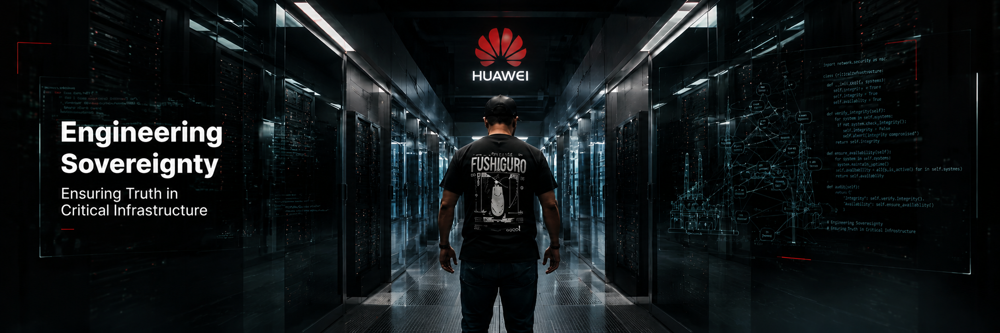

12 سنة من الهندسة في قلب البنية التحتية السيادية لمصر. من 450,000 طن/يوم بتroleum إلى شبكات اتصالات 10,000+ موظف، من OptaSense إلى أنظمة SCADA على مستوى الجمهورية، إلى Adam Prism. كل خطوة في الرحلة مهّدت للتي بعدها.
آدم السيادي ضد الـ cloud الفوضوي. 10 ثوان. سؤال واحد: مين يكسب؟
هل ستدعم آدم ليكمل المعركة؟
Support and let him continue →السيادة مش فلسفة. دي engineering requirement.
عندما البنية التحتية الحيوية في بلدك. عندما AI يقرأ بياناتك الاستراتيجية. عندما downtime يكلف $4.4M+.
السؤال مش "هل استخدم cloud AI عام؟" السؤال: هل أملك الـ IP؟ هل أتحكم في الـ compute؟ هل بياناتي على soil بتاعي؟
ده مش سؤال تقني. ده سؤال سيادي. وآدم هو الجواب.
مش كل القصص لطيفة. مش كل المشاريع نجحت. لكن كل فشل اتعلمت منه، وكل تجربة اتبنت عليها. الـ 12 سنة اللي سبقت Adam لم تكن مجرد career — كانت تخصص في الـ engineering of national-scale critical infrastructure.
البداية كانت في قلب الصناعة المصرية. معالجة 450,000 طن يومياً من مختلف المنتجات البترولية — معايرة شاملة وتصدير للسوق المصري وكافة القطاعات الحيوية. هنا اتعلمت إن الدقة ليست luxury — دي survival. خطأ في المعايرة يعني خطأ في الـ pricing، في الـ quality، في الـ safety. الـ 8 سنوات دي علمتني الـ engineering of measurement, of precision, of operating under pressure where mistakes have consequences.
450K طن/يوم · 8 سنوات · calibration-gradeانتقلت إلى الـ telecom infrastructure. شبكات الميكرويف والسنترالات لخدمة أكثر من 10,000 موظف. هنا تعلمت الـ scale: كيف نبني network يستحمل 10,000+ concurrent users، كيف نقلل الـ downtime إلى الصفر، كيف نـ monitor network من القاهرة إلى أسوان بدون أي single point of failure. الـ scale بتعلم discipline.
MW networks · 10K+ employees · 99.99% uptimeانضممت إلى OptaSense — الشركة الرائدة عالمياً في distributed fiber-optic sensing. الألياف الضوئية المرافقة لأنابيب البترول لكشف التسريب والسرقات في الوقت الفعلي. كل متر من الألياف الضوئية هو sensor. كل anomaly في الـ acoustic signature هو potential threat. هنا تعلمت إن الـ physical security و الـ data security مش منفصلين — هم نفس الـ problem. كل drop في الـ pressure، كل vibration غير طبيعي، كل thermal anomaly — كل واحدة data point. والـ sovereignty هنا مش policy — دي ability to operate critical infrastructure without depending on external networks.
Distributed fiber sensing · Oil & gas · 3rd-party detectionتوليت عهدة نظام SCADA عملاق على مستوى الجمهورية — التخطيط، التنسيق، استلام وتوزيع العهدة، تركيب كل مسمار في النظام. من غرف البلوف إلى المحطات الفرعية إلى المحطات الرئيسية إلى workstations. من VSAT إلى 4G في الأماكن المعزولة. من RTUs إلى data centers مهولة. من أنظمة الحماية إلى إدارة مخازن الذاكرة Yokogawa. الـ scale كان national. التعلم كان: كل system component لازم يكون auditable, maintainable, and replaceable by local teams. لا vendor lock. لا single point of failure. لا system that requires foreign experts to operate.
Republic-scale · Yokogawa · Multi-vendor integrationفي 2025، الرحلة اتحولت. من الـ hardware والـ cables والـ control rooms، إلى الـ models و الـ data والـ sovereignty في الـ digital layer. 6 مشاريع عملاقة. تدريب أكثر من 90 agentic AI model. كل واحد بـ solves مشكلة حقيقية في critical infrastructure.
الـ 12 سنة في الـ industrial control systems علمتني إن الـ engineering of national-scale systems هو نفسه، سواء كان SCADA أو AI. planning, coordination, deployment, monitoring, incident response. الفرق: الـ AI layer يـ يضيف reasoning على الـ data اللي الـ SCADA بيوّلّدها. الـ 90+ models اللي درّبناهم في 2025 — كل واحد بياخد الـ raw data من أنظمة مختلفة وبيعمل reasoning, anomaly detection, root cause analysis, أو decision support.
الـ 90+ model مش chatbot. مش "سؤال وجواب." كل model هو agent: بياخد context، بياخد قرار، بيستخدم tools، بيتحقق من نفسه. الـ 12 consciousness layers في Adam Prism هي الـ architecture of these agents. Provider management, context engine, security guard, tool orchestration, iron memory, learning engine, ethics gate, channel hub, subagent teams, voice pipeline, meta learner, reflection. كل layer بيعمل حاجة واحدة، وكل layer قابل للاختبار.
نظام RAG للـ Yokogawa DCS. يربط manuals، datasheets، و tribal knowledge في knowledge base واحدة. الـ engineers يقدرون يسألون بالعربي عن أي system component.
Production300+ مجموعة WhatsApp. tracking, compliance, automated responses، route to human agents لما الـ case يحتاج. كل transaction موثقة.
DeliveredArabic-first LLM للمحتوى القانوني. 40+ iteration من التدريب. تعلمت إن الـ Arabic content الحقيقي محتاج curated data، مش scraped data.
Built20+ workflow automation عبر Telegram، Email، CRM، ERP، databases. كل workflow مراقب، logged، ومراجع.
Foundation11+ قصة عربية في أسلوب أحمد توفيق. تجربة في الـ narrative AI بالعربي. فهمت إن الـ storytelling العربي له rhythm مختلف.
منشور400M tokens من curated content، 170+ topic، في multiple dialects. ده الـ foundation للـ custom training في كل engagement.
منسقلا sales team. لا account managers. لا طبقات. Mohamed نفسه.